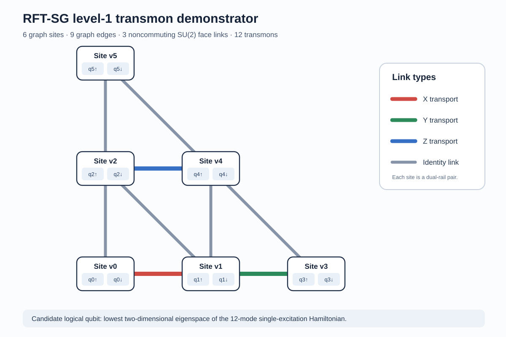
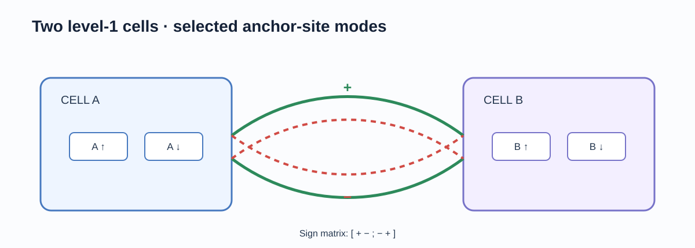

Self-similar graph
A finite gasket graph supplies vertices, edges and a defined refinement level.
A proposed quantum-processing element where self-similar connectivity and non-commuting SU(2) transport define the effective Hamiltonian. The first hardware study maps one level-1 cell to a dual-rail superconducting-transmon tile.
Explore the level-1 tile ↓ · Repository ↗
The graph and SU(2) link matrices define the model; diagonalization selects a candidate two-dimensional subspace; projected operators determine logical control directions.
A finite gasket graph supplies vertices, edges and a defined refinement level.
Selected face edges carry X, Y or Z rotations at θ = π/2.
Degree terms and oriented complex hopping amplitudes form a Hermitian operator.

The lowest two-dimensional spectral subspace is checked against leakage states.
Local spin-like operators are projected into the subspace and tested for independence.
Each of six graph sites is represented by a dual-rail pair qᵥ,↑ and qᵥ,↓. The numerical study is restricted to one total excitation. The paired modes form a synthetic SU(2) degree of freedom; they are not two independent logical qubits.

Engineering schematic from the numerical prototype. It is not a chip photograph, fabrication mask or measured device.
| Link class | Graph edges | Channels per edge | Total |
|---|---|---|---|
| Identity | 6 | 2 | 12 |
| X transport | 1 | 4 | 4 |
| Y transport | 1 | 4 | 4 |
| Z transport | 1 | 2 | 2 |
| Total | 9 | — | 22 |
These are finite-model outputs, not laboratory measurements.
| SG level | Graph sites | Transmons | Gap / J | Best local g_eff |
|---|---|---|---|---|
| 1 | 6 | 12 | 1.393713 | 0.177043 |
| 2 | 15 | 30 | 0.397335 | 0.079709 |
| 3 | 42 | 84 | 0.088608 | 0.034749 |
| 4 | 123 | 246 | 0.015864 | 0.017990 |
| 5 | 366 | 732 | 0.002986 | 0.015085 |
The 0.015085 value belongs to level 5; it is not the level-1 result.
Two independently calibrated level-1 cells are coupled at selected anchor sites. The proposed differential-density interaction uses four pairwise cross-Kerr channels.

H_AB / ℏ = χ S_z(A) S_z(B)
0.00783608327 χ
Projected interaction coefficient
6.38074 μs
Ideal estimate at assumed χ/(2π) = 10 MHz
Resolve the complex coupling implementation on one cell before scaling the graph or building a two-cell processor.
Choose a physical phase-engineering path and preserve the complex coefficient.
Check multilevel circuit-QED, parasitics, sidebands and leakage.
Fabricate, calibrate, reconstruct the spectrum and projected controls.
Implement signed cross-Kerr channels and measure an entangling gate.
Start with nearest-neighbour logical modules; expand after data.
The companion project documents the fourth spectral-moment identity and normalized limit −8/9.
Finite graph, SU(2) Hamiltonian, projected controls and two-cell projection are reproducible.
Transmon mapping and controls are engineering designs awaiting validation.
No fabricated or measured QPU is claimed. Gate fidelity and fault tolerance are unestablished.
✓ Level-1 numerical package and regression tests implemented.
✓ Topology and 22-channel coefficient export generated.
✓ Isolated phase-conjugate Z link screened in a reduced qutrit block.
⚠ Nine-tone collision screen: 0 MHz margin; simultaneous schedule not cleared.
○ Fabrication and measured gates not demonstrated.